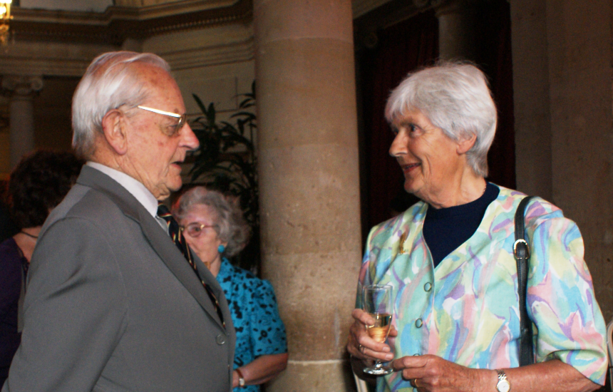
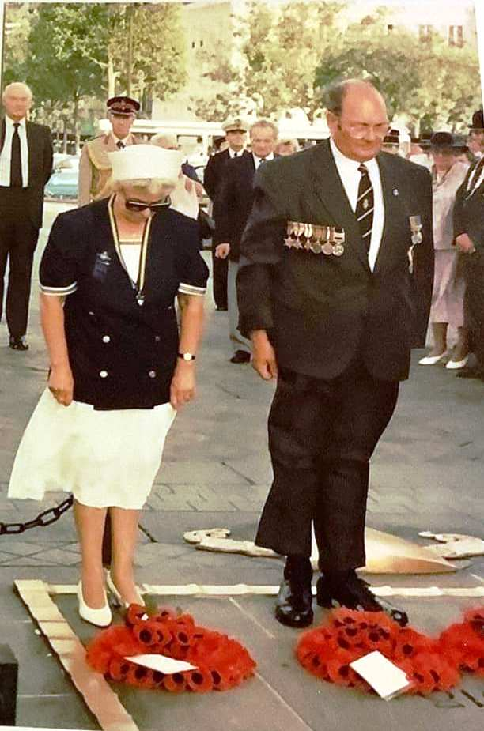

Archive
Obituaries
Obituaries and remembrance notices from the Paris Branch.
Patrick Noble
Born 7 January 1934 · Died aged 88 · Paris Branch since 1977
We have learnt with sadness of the death of Patrick, a much valued member of the Paris Branch since 1977. Patrick served in the Royal Navy as petty officer on HMS Kenya from 1956–58 and subsequently became a chartered electrical and mechanical engineer. His interests included sailing and history — especially military history — and it is as the latter that he was a contributor to our monthly Newsletter. Patrick's son is a Lieutenant Colonel in the British Army and was stationed here in Paris as a Liaison Officer until the summer of last year. Our sincere condolences go to all Patrick's family and his friends.
Sandra Cheyne
7 December 1951 – 28 July 2022 · President, BCWA
We have learnt with immense sadness that Sandra died on 28 July. As many of you know, Sandra was very ill but she continued to be President of the BCWA, managing to fit in the meetings around her chemo dates and, when her two years were up, offering to continue in the job for a while longer. And even before she was President, we learned to appreciate her good sense and equally good humour during her time as Membership Secretary. In addition to her activities with the BCWA, Sandra was also a much appreciated member of the RBL Paris Branch.
Muriel Langle

Died 23 May 2022, aged 84 · Joined 2012 · Chevalier de l'Ordre National du Mérite
We are sad to learn of the death of our member, Muriel Langle, aged 84, in a Versailles clinic where she had been for some time following a fall. Her children were with her. Muriel was a long-standing member of the RBL Paris Branch, having joined in 2012. A retired teacher from the British School of Paris, she coached their hockey team to a series of victories. Secretary of the BCWA until 2020, she notably launched the BCWA Newsletter. Muriel was awarded the Médaille d'or de la Jeunesse et des Sports.
Beryl Jones
Died 26 January 2022 · RBL Paris Branch · BCWA committee
The sad news of Beryl's death reaches us by way of the BCWA. Until recently a member of the RBL Paris Branch, Beryl was also an active member of BCWA and served on their committee. The RBL Paris Branch wish to associate our own condolences with those of the BCWA to Beryl's family and friends.
Barbra Gardner
Died 19 December 2021, aged 91 · Secretary, RBL Paris Branch, late 1980s to early 1990s
Barbra Gardner's daughter Carole informs us that her mother died on 19 December, aged 91. Barbra was Janet Warby's predecessor as Secretary of the RBL, a position she held in the late 80s to early 90s. John, her husband, was Chairman of the Branch and died whilst in post. Barbra was also a Committee member of the BCWA. We extend all our sympathy to Barbra's daughter and all her family.
Micheline Mann
Died 10 May 2021 · Member for 32 years · Buried in Montmartre cemetery
We learn with sadness, and somewhat belatedly, of the recent death of Micheline Mann. A member of the Royal British Legion Paris Branch for 32 years, she also worked on our committee and will be particularly remembered by her fellow members. Michelle — she hated the name “Micheline” because of the trains of the same name — was also an officer of IMLI, the Intelligence Liaison Officers Association. Michelle is buried in the Montmartre cemetery. All our condolences go to her family and friends.
Jean Morris

Died 23 February 2021, aged 87 · Chairman, Herne Bay Women's Section, 1990s
We are very sad to learn, from Janet Warby, our Paris Branch Secretary General and Chief Standard Bearer, of the death of her mother, Jean Morris, yesterday at the age of 87, at her home in Northern Ireland. Her funeral took place in Londonderry on Thursday 25 February 2021 at 10h00. Like her daughter, Jean was very active in the Royal British Legion and was Chairman of the Royal British Legion Herne Bay Women's Section, Kent, in the 1990s. She visited Paris in August 1994 and laid a wreath at the Arc de Triomphe on behalf of the Herne Bay Branch. A wonderful woman, mother to three, grandmother to ten and great-grandmother to nine, she will be sorely missed by all who knew her. May she rest in peace.
William Faulkner
Died 12 February 2021, Dublin · Cremated 25 February 2021
John Faulkner informs us of the death of his brother, William Faulkner. A member of the Paris Branch until his return to Dublin, when he transferred his membership to local branches, including that at Portstewart, Northern Ireland, where his son John is a member. William passed away peacefully at his home in Dublin on Friday 12 February 2021 and was cremated on 25 February 2021. He will be greatly missed in all four of the RBL branches he had been involved with.
Brigadier Barrington "Barrie" Wilson, CBE, DSO
Died 2010 · Paris Branch member for many years · Chairman 1968–1976
Brigadier Barrington Wilson — affectionately known as "Barrie" — died in 2010. He was for many years a member of the Paris Branch and Chairman from 1968 to 1976. Born in Pakistan (then British India), where his father, a Colonel in the Royal Artillery, was serving, he was educated at Wellington College and the Royal Military Academy, Woolwich, and commissioned into the Royal Artillery in 1932.
He had a very distinguished military career, serving in India, Egypt and the UK pre-war. He saw active war service in 1944–45 as Brigade Major RA in 11th Armoured Division and in command of the Field Artillery Regiment in the Guards Division, taking part in the Normandy invasion. He fought in the battles around Caen, Vire and Falaise before crossing the Seine at Vernon, then took part in the liberation of Brussels in September 1944, the battle of Arnhem, crossing the Rhine at Rees, and ended the war at Kiel/Cuxhaven in Germany. For his war service he was awarded the Distinguished Service Order, Chevalier de l'Ordre de Leopold II (Belgium), and Chevalier de la Croix de Guerre (Belgium).
After the war he held many successive appointments, including Instructor at Staff College Camberley, Chief of Defence Staff at the British Joint Services Mission in Washington, and, after attending the École Supérieure de Guerre in Paris, second in command of a Royal Horse Artillery Regiment in Germany, Commander of an Anti-Aircraft Regiment in Malta, Instructor at the NATO Defence College in Paris, and Head of Military Operations Branch (NATO Section) at the War Office. He will still be remembered by some as the Military Attaché at the British Embassy in Paris as Brigadier from 1961 to 1964, after which he was Chief of Public Information at SHAPE until retirement in 1967. He remained in France and was instrumental in setting up "riding for the disabled" in France.
Read the original obituary (PDF) ›
← Back to From the archive

 River Cruises
River Cruises France's English newspaper
France's English newspaper